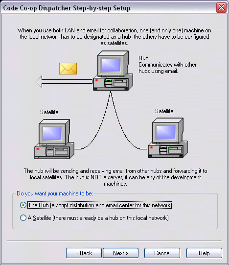

You may use both LAN and E-mail for collaboration. E-mail is used between your hub and other hubs or e-mail peers. LAN is used between your hub and its satellite machines. Satellites don't use e-mail directly, they forward synchronization scripts to their hub, which then e-mails them to the outside world.
